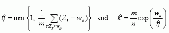
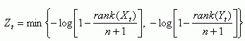

<!DOCTYPE html PUBLIC "-//W3C//DTD HTML 4.01 Transitional//EN">
<html>
<head>
  <meta content="text/html; charset=ISO-8859-1"
 http-equiv="content-type">
  <title>Verification of rare binary events</title>
  <link rel = "stylesheet" href="../../default.css">
</head>
<body style="color: rgb(0, 0, 0);" alink="#000099" link="#000099"
 vlink="#990099">
<h2 style="text-align: center;">Verification for deterministic forecasts of rare, binary events</h2>
<div style="text-align: center;">Dr Christopher A. T. Ferro<br>
Walker Institute, Department of Meteorology, University of Reading<br><br>
<br>
February 16, 2007
</div>
<a href="xverif_summary.pdf">Printer-friendly version</a>
<p>
Consider the problem of verifying deterministic forecasts of a binary
event when the event is rare. The standard approach is to record the
frequencies with which the event was observed and forecasted in a
two-by-two table, and then to quantify forecast quality with summary
measures of the table. The frequency with which rare events are
observed may be low, which increases sampling variation in such
measures and creates uncertainty about forecast quality. Most measures
also necessarily degenerate to trivial values as event rarity
increases, which projects misleading impressions of forecast quality
and complicates the discrimination between forecasting systems. These
problems can be overcome by constructing a probability model for how
the entries in the table are expected to change as rarity increases.
The model proposed here identifies two, key parameters for describing
such changes and places parametric constraints on the table that help
to reduce sampling variation.
<p>Suppose that the event is forecasted when a continuous, scalar
quantity
<i>X</i> exceeds a threshold <i>u</i>, and that the event is observed
when a continuous, scalar quantity <i>Y</i>
exceeds a threshold <i>v</i>. The
two-by-two table is then defined by three probabilities: Pr(<i>X</i>
&gt; <i>u</i>), Pr(<i>Y</i> &gt; <i>v</i>), and the joint probability
Pr(<i>X</i>
&gt; <i>u</i>, <i>Y</i> &gt; <i>v</i>). Suppose also that the
forecast
threshold <i>u</i> is chosen so that
Pr(<i>X</i> &gt; <i>u</i>) = Pr(<i>Y</i> &gt; <i>v</i>) = <i>p</i>
for all base rates <i>p</i>. This simplification means that
the probability model will only describe the quality of forecasts were
they to be perfectly calibrated. It remains to define the joint
probability. Results from extreme-value theory imply that Pr( <i>X</i>
&gt; <i>u,</i> <i>Y</i> &gt; <i>v</i>) = <i>&#954;p<sup><small>1/&#951;</small></sup></i>
when <i>p</i> is small under
mild conditions on the joint distribution of <i>X</i> and <i>Y</i>,
where <i>&#954;</i>
and <i>&#951;</i> are unspecified parameters satisfying <i>&#954;</i> &gt; 0
and 0
&lt; <i>&#951;</i> &#8804; 1. These two parameters therefore define the
two-by-two table, and so
forecast performance, for any small base rate <i>p</i>. The particular
values
of <i>&#954;</i> and <i>&#951;</i> depend on the quality of the forecasts and
need to be estimated from
data. Once they are estimated, however, the model can be used to
construct the table for any small base rate, and summary measures can
be derived. For example, the hit&nbsp; rate is the proportion of
observed events that are correctly forecasted, and is modelled by Pr(<i>X</i>
&gt; <span style="font-style: italic;">u</span>, <i>Y</i> &gt; <i>v</i>)
/
Pr(<i>Y</i> &gt; <i>v</i>) = <i>&#954;p<sup><small>1/&#951;-1</small></sup></i>.
Plotting the
estimated values of <i>&#954;</i>
and <i>&#951;</i> against each other for different forecasting
systems is a useful way of comparing their abilities to forecast
extreme events.
</p>
<p>Estimating <i>&#954;</i> and <i>&#951;</i> is computationally easy but
requires care. Since the model holds for only small values of <i>p</i>, a threshold 
base rate <i>p<small><sub>0</sub></small></i> must
be chosen below which the model is considered to be a sufficiently
accurate description of the data. The parameters are then estimated
from those data for which both <i>X</i>
and <i>Y</i> exceed their upper <i>p<small><sub>0</sub></small></i>-quantiles.
Once this subset is chosen, analytical expressions for the maximum-likelihood
estimators are available. If {(<i>X<sub>t</sub></i>, <i>Y<sub>t</sub></i>)
: <i>t</i> = 1,..., <i>n</i>} denotes the historical record of
<i>X</i> and <i>Y</i> variables then the estimators are<br>
</p>
<p><br>
</p>
<p>where <i>w<small><sub>0</sub></small></i> = -log <i>p<small><sub>0</sub></small></i>,
<i>m</i> is the number
of <i>Z<sub>t</sub></i> exceeding <i>w<small><sub>0</sub></small></i>, and <br>
</p>
<p><br>
</p>
<p>Choosing <i>p<small><sub>0</sub></small></i> involves a trade-off
because larger <i>p<small><sub>0</sub></small></i> admit more data,
increasing the precision of estimates, but reduce the accuracy of the
probability model. The validity of the model assumptions should also be
challenged with understanding of the physical processes generating the
data, and the fit of the model should be assessed empirically with
diagnostic plots and tests.
</p>
<p>A more detailed description of the model, its assumptions and
application, and examples of its use are given by Ferro (2007).
Computer code written in the statistical programming language R is also
available from the author.
</p>
<p><b>References</b><br>
Ferro CAT (2007): A probability model for verifying deterministic
forecasts of extreme events. <span style="font-style: italic;">Weather
and Forecasting</span>. 
</p>
<a href="xverif_summary.pdf">Printer-friendly version</a>

</body>
</html>
